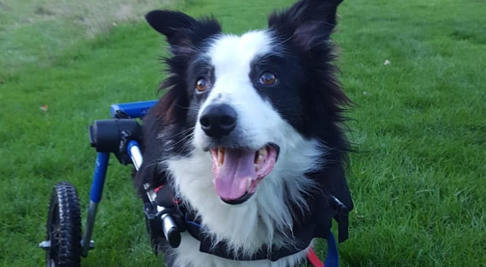

Northwest: Regions like Washington and Oregon might have Border Collie prices ranging from $1,000 to $2,500. Rocky Mountains: For states such as Colorado and Utah, expect prices between $900 to $2,200
border collies are very friendly and get along well with other animals
Supremely intelligent and brimming with energy. This highly intelligent, graceful dog is born with an instinct to work and responds extremely well to training, which is why they are often used as a mountain-rescue or sniffer dog. Border Collies make loyal, faithful pets that thrive on company and stimulation.
border collies have a double coat perfect for cold season
border collies are prone to some issues like epilepsy, seperation anxeity, hip dysplacea, collie eye syndrome and overheating disorders so make sure you do all research before adopting or buying one
